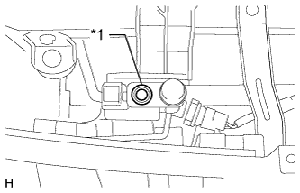
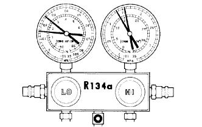

REFRIGERANT > ON-VEHICLE INSPECTION |
| 1. INSPECT REFRIGERANT VOLUME |
|  |
Check the sight glass on the air conditioning tube assembly.
| *1 | Sight Glass |
| Item | Symptom | Amount of Refrigerant | Corrective Procedure |
| 1 | Bubbles visible | Insufficient* | (1) Check for gas leakage and repair if necessary (2) Add refrigerant until bubbles disappear |
| 2 | No bubbles visible | Empty, insufficient or too much | Refer to items 3 and 4 |
| 3 | No temperature difference between compressor inlet and outlet | Empty or nearly empty | (1) Check for gas leakage with halogen leak detector and repair if necessary (2) Add refrigerant until bubbles disappear |
| 4 | Considerable temperature difference between compressor inlet and outlet | Correct or too much | Refer to items 5 and 6 |
| 5 | Immediately after A/C is off, refrigerant becomes clear | Too much | (1) Drain or discharge refrigerant (2) Bleed air and supply proper amount of purified refrigerant |
| 6 | Immediately after A/C is off, refrigerant foams and then becomes clear | Correct | - |
| 2. INSPECT REFRIGERANT PRESSURE WITH MANIFOLD GAUGE SET |
This method uses a manifold gauge set to locate problem areas. Read the manifold gauge pressure when these conditions are established.
Test conditions:
| *a | Pressure on low-pressure side | *b | Blower HI Zone |
| *c | Blower LO Zone | *d | Pressure on high-pressure side |
|  |
Normally functioning refrigeration system.
| Pressure Side | Refrigerant Volume |
| Low | 0.15 to 0.25 MPa (1.5 to 2.5 kgf/cm2) |
| High | 1.37 to 1.57 MPa (14 to 16 kgf/cm2) |
The A/C system periodically changes between normal and improper function due to moisture in the refrigerant system.
| Symptom | Probable Cause | Diagnosis | Corrective Action |
| During operation, pressure on low pressure side cycles between normal and vacuum | Moisture in refrigeration system freezes at expansion valve orifice, causing temporary stop of cycle. However, when melted, normal state is restored. | - Dryer is overly saturated - Moisture in refrigeration system freezes at expansion valve orifice and blocks refrigerant circulation | 1. Replace cooler dryer 2. Remove moisture from cycle by repeatedly evacuating air 3. Supply appropriate volume of new refrigerant |
The A/C system does not function effectively due to insufficient refrigerant.
| Symptom | Probable Cause | Diagnosis | Corrective Action |
| - Pressure low on both low and high pressure sides - Cooling performance insufficient | Gas leakage from refrigeration system | - Insufficient refrigerant - Refrigerant leakage | 1. Check for gas leakage and repair if necessary 2. Supply appropriate volume of new refrigerant 3. If indicated pressure value close to 0 when connected to gauge, create vacuum after inspecting and repairing location of leakage |
The A/C system does not function effectively due to poor circulation of the refrigerant.
| Symptom | Probable Cause | Diagnosis | Corrective Action |
| - Pressure low on both low and high pressure sides - Frost exists on piping from condenser to A/C unit | Refrigerant flow obstructed by dirt in condenser | Condenser clogged | Replace condenser |
The A/C system does not function or functions intermittently because the refrigerant does not circulate.
| Symptom | Probable Cause | Diagnosis | Corrective Action |
| - Vacuum indicated on low pressure side, and extremely low pressure indicated on high pressure side - Frost or condensation seen on piping on both sides of condenser or expansion valve | - Refrigerant flow obstructed by moisture or dirt in refrigeration system - Refrigerant flow obstructed by gas leakage from expansion valve | Refrigerant does not circulate | 1. Check expansion valve refrigerant 2. Clean expansion valve by blowing air 3. Replace condenser 4. Evacuate air and charge appropriate volume of new refrigerant 5. For gas leakage from expansion valve, replace expansion valve |
The A/C system does not function effectively due to overcharged refrigerant or insufficient cooling of the condenser.
| Symptom | Probable Cause | Diagnosis | Corrective Action |
| Pressure extremely high on both low and high-pressure sides | - Excessive refrigerant - Cooling performance of condenser insufficient | - Condenser is dirty - Condenser fan motor is malfunctioning - Excessive refrigerant | 1. Clean condenser 2. Check condenser fan motor operation 3. If 1 and 2 normal, check amount of refrigerant and supply appropriate volume of refrigerant |
The A/C system does not function due to air in the refrigeration system.
| Symptom | Probable Cause | Diagnosis | Corrective Action |
| - Pressure extremely high on both low and high-pressure sides - Low-pressure piping is too hot to touch | Air in refrigeration system | - Air in refrigeration system - Vacuum purging insufficient | 1. Check if compressor oil is dirty or insufficient 2. Evacuate air and charge new refrigerant |
The A/C system does not function effectively due to an expansion valve malfunction.
| Symptom | Probable Cause | Diagnosis | Corrective Action |
| - Pressure extremely high on both low and high-pressure sides - Frost or condensation on piping on low-pressure side | Problem with expansion valve | - Excessive refrigerant in low pressure piping - Expansion valve too wide open | Replace expansion valve |
The A/C system does not function due to a defective compressor.
| Symptom | Probable Cause | Diagnosis | Corrective Action |
| - Pressure extremely high on both low and high-pressure sides - Pressure extremely low on high pressure side | Internal leakage in compressor | - Compression failure - Leakage from damaged valve or broken sliding parts | Repair or replace compressor |